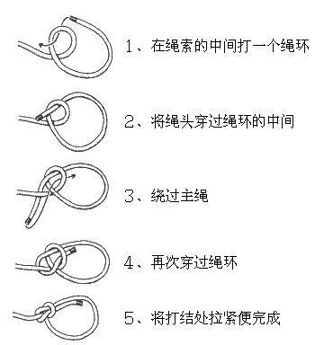

绳结技术大全
- 原文:户外 胡较瘦 -> 【小驴TV】绳结技术大全 https://zhuanlan.zhihu.com/p/22767200
搜到关于绳结讲得最全面的文章，包括各种绳结的用途、优点、缺点、风险、注意事项等等，为便于掌握得更熟练，整理记录在这里。
在攀登过程中，绳子要与其他保护装备、固定点以及绳子自身发生许多连接，以满足各种实际需要，这就出现了各种各样的绳结。
一根绳子是没有生命的，但一旦赋予它绳结，绳子就变得无所不能了。打绳结本省很容易，关键是要打正确，并明白它的用法和原理。更重要的是，要做到能根据户外的实际情况打出合理地绳结，这需要在实践中不断地练习。
户外绳结一般分为三种：
一，连接固定点的绳结； 二，连接绳子间的绳结； 三，下降用的绳结。
绳结的强度
首先讲下绳结强度的变化关系。打完结后绳子会扭曲，内心和表皮纤维受力不均，会削弱绳子原有的强度。
如果一条绳子在不打结的情况下强度是100%，那么在打成绳结使用时，其相对强度会发生变化，如下表：
| 绳结类型 | 相对强度(%) |
|---|---|
| 无绳结 | 100 |
| 8字结 | 70-75 |
| 布林节 | 70-75 |
| 双渔人结 | 65-70 |
| 单环节 | 65-70 |
| 水结 | 60-70 |
| 单结 | 60-65 |
| 双套结 | 60-65 |
| 平结 | 45 |
连接固定点的绳结
8字结:连接攀登者的绳结
我们通常用8字结来连接攀登者，而且这个绳结直接与安全带连接起来才是最安全的，所以这个绳结也是目前攀岩正式比赛中唯一允许连接攀登者的绳结。
由于形似“8”字被称为8字结。
这个绳结一旦打错，后果是致命的，所以要求攀登者在离开地面之前一定要反复检查，确保万无一失。
8字结的优缺点
容易打，强度高，易检查； 受力后不易解开。
注意事项
在攀登过程中，8字结使用的最频繁，攀登者一定要注意一下事项：
（1）受力绳圈要尽量与安全带连紧。 （2）绳结连接的部位是安全带的攀登换，并非保护环或其他部位。 （3）打好结后，一定要将各部位调整顺滑，以保证均衡受力并易于检查。 （4）打好结后一定要将绳结收紧，松垮的外形是不安全的。 （5）绳尾做好末端处理（打好防脱）后，还要留出绳子直径8倍的长度，一般5-8厘米。 （6）攀登前一定要再次检查并确认无误。 （7）8字结的绳圈不能太大也不能太小，一般10厘米长。
8字节打法
8字结的打法打法分为将绳子对折后双股直接打的8字结、和利用单绳经过编织方式打的8字结。 其中第二种是在固定物不能直接套入”8“字结时采用的方法，打法就是先打个单”8‘字结，然后用多余绳头绕过固定物反穿回去即可。
双8字结
可以直接套入的固定点连接，主要用于连接攀登者安全带，也可用于结组攀登的中段结组绳结。
反穿8字结
先用单绳打一个单8字结，将多余绳头绕过固定点后，直接用绳头反穿，最后打个防脱即可。
用于无法直接套入的固定点连接，以及有时多人结组者两端绳头的结组结。

对穿8字结
还有一种用法，就是连接两根直径相同的绳子，叫对穿“8”结（如下图3），即先单绳打好一个“8’字结然后，用另一根绳子对穿回来。对穿完成后，一定要在两端绳头打半结防脱。

单向穿8字结
这个结只可在双绳下降時把两根绳子末端结起来，防止绳子从下降器中溜走产生意外。万不可以用来连接两根绳，受力下很易松开，又称欧洲死亡结。
布林结:户外绳结之王，连接固定点
也称“称人结”，也因为其使用最多，被称为户外活动为绳结之王。
在攀登时经常需要设置保护点，我们常见的天然保护点有树、石头活动者横杆等。如果再使用8字结就显得很费事，这是就可以使用布林结来代替。总之，布林结广泛用于户外，主要是连接固定点以及安全带连接（结组时）。
布林结的打法方便快捷，大强度受力后依然容易解开，但在一松一紧受力不稳定时容易松动以致完全脱开， 所以在使用时要反复检查，并且一定要防脱。
布林结打法
常规双手打法
以下是布林结的几种打法，其实有句口诀：小兔子，钻出洞外，绕树一圈，再回洞中。
还有双布林结，即两股绳打结，比单布林结稳固性更好。


- 连接它物绑法
此种方法是最方便快捷也最可靠的，只需绕过固定物，拉绳头，再穿洞即可。
单手绑法
此方法更加适合于单手操作，比较方便，但是戴着手套的情况下不方便。

约塞米蒂布林结(优胜美地布林结)
为了使布林结更牢靠，因此发明了约塞米蒂结，简单的反穿很好的起到防脱的作用，也无需再打绳尾防脱。

杰克版布林结
糟糕的表现，使单布林结（Single Bowline）在攀岩界名声很臭。尽管它兄弟—— 双布林结（Double Bowline） ，名声相对要好得多，然而事实上，许多岩友却对双布林结有种莫名的恐惧。就拿我来说吧，之前有好几年，就一直提醒自己不要去碰它。
直到杰克·米莱斯基（Jack Mileski），对此进行了小小的改进。
杰克改进的额外一步，就是把尾绳折叠回洞口，并紧贴树干（注1），如此一来就能牢牢卡住双布林结。如果用尾绳再打一个双葡萄藤结（Double Grapevine即双渔人结）作副保，那你就一百个放心吧。 即使一个胖墩来下冲坠，要解开它也是小菜一碟。

布林结绳盘
在没有安全带的情况下，可以用登山绳盘绳打布林结做简易安全带。
另一个与航海有关的古老绳结，我想应该要算布林结绳盘了，这是一个用来实施龙骨拖刑的特殊绳结（keel-haul knot）（注1）。岩友们将发现它，同样令人毛骨悚然。
虽然布林结绳盘，可以充当应急用的安全带，不过吊挂时间过长，就很可能会被勒死。
尽管如此，为防万一，掌握布林结绳盘还是有必要的。
按照标准，布林结绳盘得在腰上缠绕四圈，假如绳子不够长，绕两到三圈也可以。
同其它需要收尾的绳结一样，布林结绳盘，最后要将腰间缠好的绳圈，打上双渔人结（Double Fisherman's ）收尾。
如果不得已，要悬吊在绳子上很久，记得把缠绕在腰上的绳圈，放松一圈并将它绕到屁股下面，这样你就可以坐在上面，而腰上的负荷也能卸载掉一部分。
绳结打好之后，记得仔细检查，否则腰上的绳圈没收紧的话，布林结绳盘就会变成一个滑套，活活勒死你！

正确版、错误版对比
尽管布林结绑法容易，但一不小心也会在无意中出现纰漏， 错打为"外称人结"，即尾绳跑到了绳圈外面，如此便丧失了牢固性。